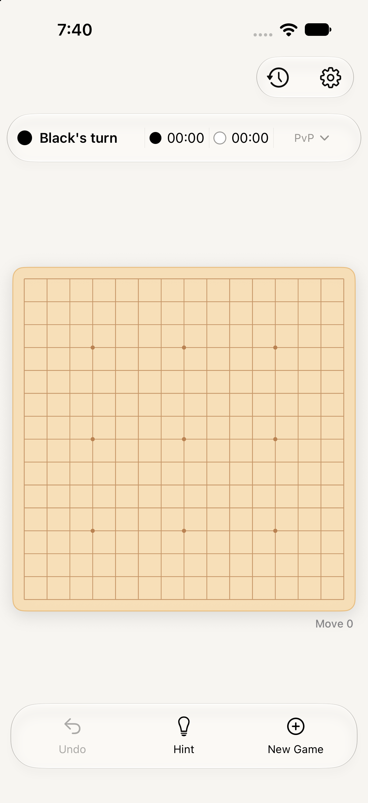

Step 01 · Open gameplay
Board and everyday play
Strong foundationThe warm board and restrained palette communicate the game immediately.
Polish: Reduce repeated match configuration in the HUD. Keep turn, player, and time information compact; give the board the strongest visual priority and leave setup to New Game.